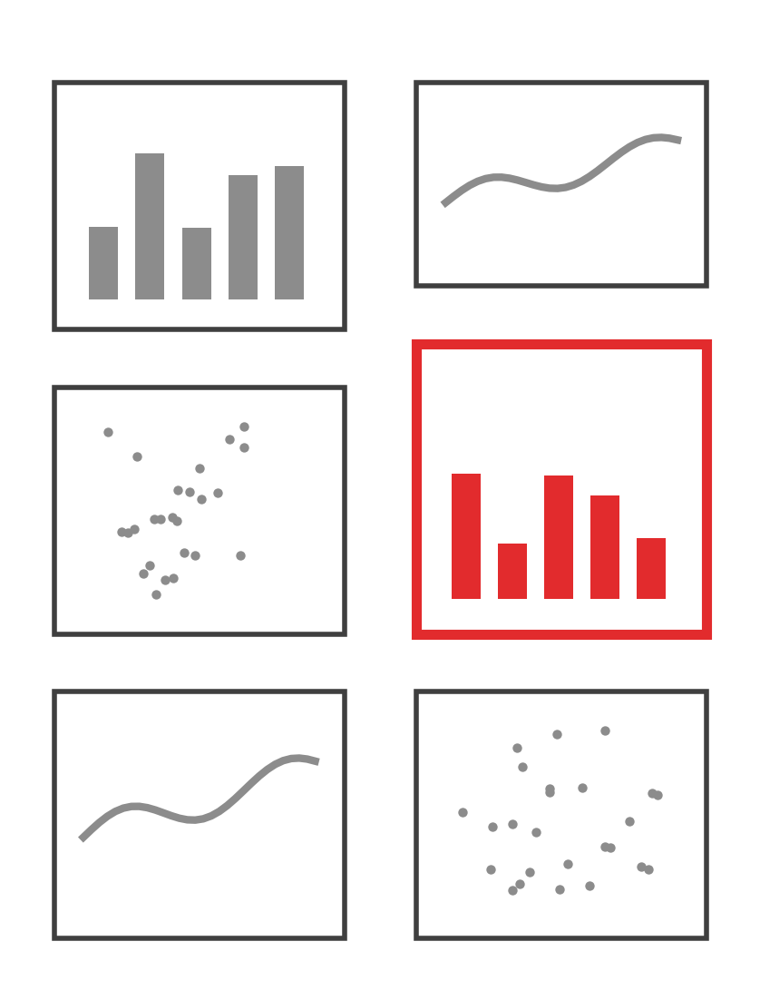
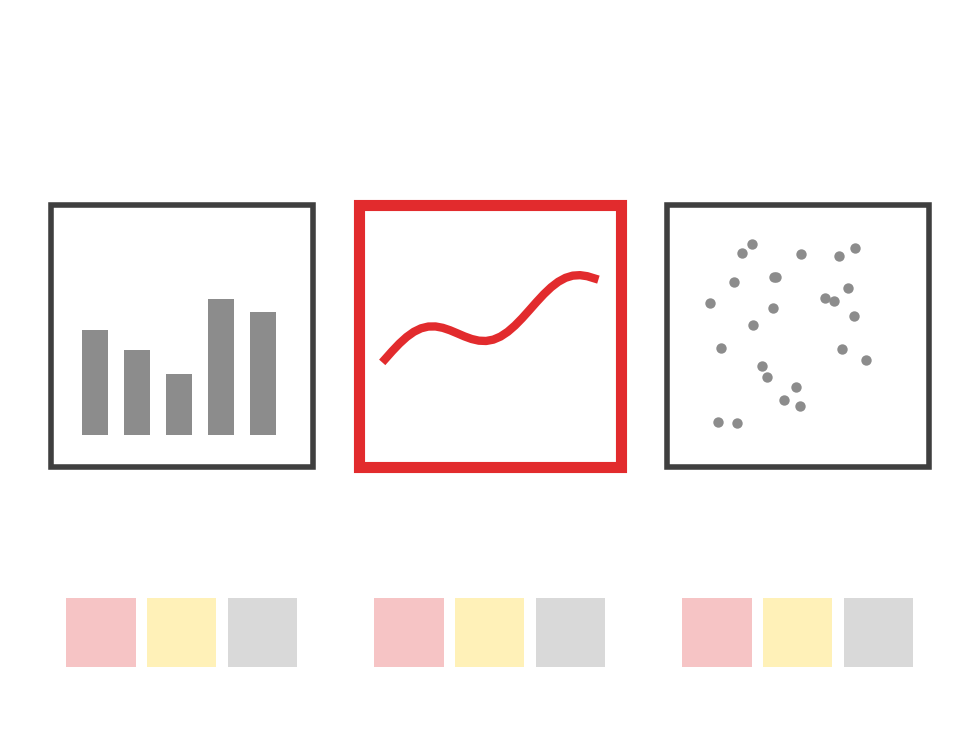
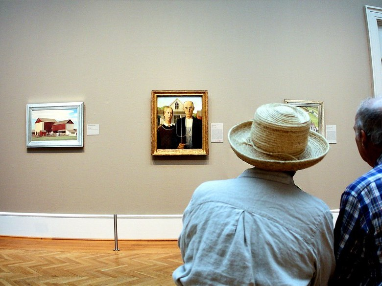

08
데이톨로지 — 데이터로 읽는 인간과 사회
중간 점검
1부를 돌아보며
주교재: 김성태, 『데이톨로지』, 이른비, 2022 · 강사 : ○○○

CONTENTS
중간 점검

학습 목표
목표 1
인포그래픽을 메시지·데이터·설계·한계 기준으로 서로 평가
목표 2
1부의 교훈 4가지 정리, 2부의 질문으로 연결
오늘의 질문
내가 만든 그림 한 장
처음 보는 사람도
메시지를 읽어 낼 수 있을까?
인포그래픽 갤러리 워크
[비유] 미술관 관람

사진: Phil Roeder / CC BY 2.0
미술관 관람 = 갤러리 워크
- 작품 = 벽에 건 인포그래픽
- 관람객 = 동료, 작가 설명 없이 감상
- 작품 앞에 멈춘 시간 = 메시지의 힘
- 관람 메모 = 포스트잇 피드백
인포그래픽 갤러리 워크
진행 (60분): 게시 → 순회 → 응답
STEP 1 · 10분
게시
- 강의실 벽에 인포그래픽 부착
- 해설 1쪽은 뒤집어 두기
STEP 2 · 35분
순회
- 작품마다 포스트잇 3장
- 빨강 = 메시지
- 노랑 = 의문
- 회색 = 숨겨진 것
STEP 3 · 15분
응답
- 작가가 포스트잇 읽기
- “내 의도와 같은가?” 확인
- 고칠 점 1개 기록
동료 평가 루브릭
중간 과제 평가 기준 (100점) · 1인당 3건 평가 (30분)
| 기준 | 보는 것 | 배점 |
|---|---|---|
| 메시지 명확성 | 한 문장으로 말할 수 있는가 | 30 |
| 데이터 정확성 | 출처·표본이 밝혀졌는가 | 30 |
| 시각 설계 | 위치·크기·색의 선택 이유 | 25 |
| 한계 성찰 | 이 그림이 숨기는 것 | 15 |
평가 원칙
- 점수 + 근거 한 줄
- 칭찬 1 + 제안 1
- 극단 점수엔 이유 필수
- 놀이터에서 점수 계산
1부 종합: 4가지 교훈
[비유] 퍼즐 맞추기
사진: Electric-Eye / CC BY 2.0
퍼즐 = 1부의 6주
- 조각 하나 = 한 주의 사례
- 조각만 보면 지도·숫자·그래프 따로따로
- 맞추면 드러나는 그림 = 데이터 리터러시
- 오늘 = 조각을 맞추는 시간
1부 종합: 4가지 교훈
과거의 데이터가 남긴 교훈
1부 종합: 4가지 교훈
2~7주 사례 한눈에
| 주 | 사례 | 남은 질문 |
|---|---|---|
| 2 | 김정호 대동여지도 · 매튜 머리 항해도 | 흩어진 자료를 어떻게 엮었나 |
| 3 | 코호트 연구 · 바커의 태아 프로그래밍 | 지금 무엇을 기록해야 하나 |
| 4 | 0의 발견 · 라이프니츠의 이진법 | 다음 보편언어는 무엇인가 |
| 5 | 벤포드 · 파레토 · 하인리히 법칙 | 법칙인가, 경험칙인가 |
| 6 | 케틀레의 평균 인간 · 테일러주의 | 평균이 가린 개인은 누구인가 |
| 7 | 스노우 · 나이팅게일 · 미나르 | 아름다운 그림은 정직한가 |
2부 예고
[비유] 별점 트로피

사진: rawpixel / CC0
트로피 = 데이터가 주는 평가
- 1부: 사람이 데이터를 기록·분석
- 2부: 데이터가 사람·가게를 평가
- 별 하나 = 상이자 낙인
- 누가, 어떤 데이터로 매긴 별인가
2부 예고
데이터의 여정: 기록에서 평가로
정리 및 확인 문제
오늘의 핵심 4줄
갤러리 워크 = 설명 없이 메시지가 읽히는지 시험
루브릭 = 메시지 30 · 데이터 30 · 설계 25 · 한계 15
1부의 교훈 = 편집 · 시간 · 보편언어 · 평균의 함정
2부의 질문 = 우리를 평가하는 데이터, 믿어도 되는가
정리 및 확인 문제
확인 문제
문제 1
김정호가 직접 답사보다 기존 지도·문서·구전을 모아 『대동여지도』를 만든 방식이 보여 주는 교훈
문제 2
미 공군 조종사 4,000여 명 중 10개 항목 모두 평균에 맞는 사람의 수와 그 의미
문제 3
인포그래픽 루브릭에서 “한계 성찰” 항목이 묻는 것
문제 2: 0명 → 평균은 집단을 요약할 뿐, 개인을 가림 (조절 가능한 조종석의 탄생)
문제 3: 이 그림이 보여 주지 않는 것, 숨기는 것 (표본·생략된 변수 등)
정리 및 확인 문제
마무리
이번 주 과제
- 포스트잇 피드백 반영해 인포그래픽 수정본 제출
- 연재 ③ 「‘별점’의 함정, 무엇이 문제인가」 읽기
- 저널: 최근 본 별점 화면 1건 캡처
다음 시간
별점의 함정 — 무엇이 문제인가
이미지 출처
사진 (Openverse 검색, CC 라이선스)